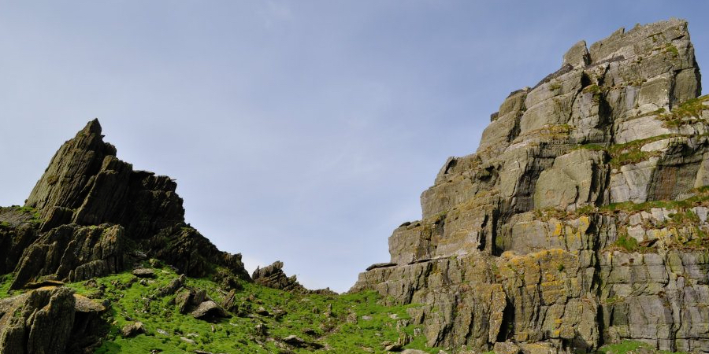
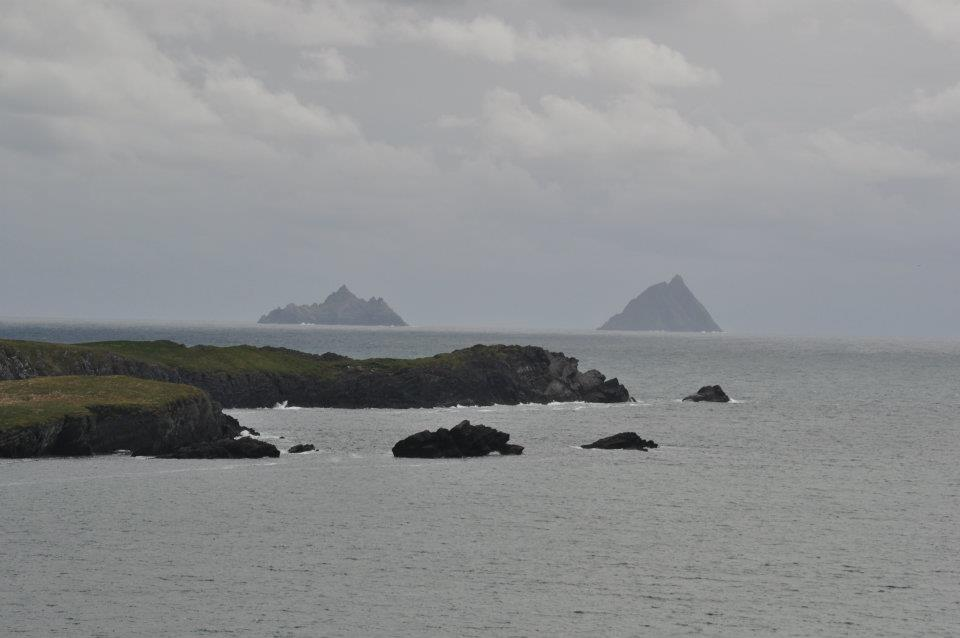
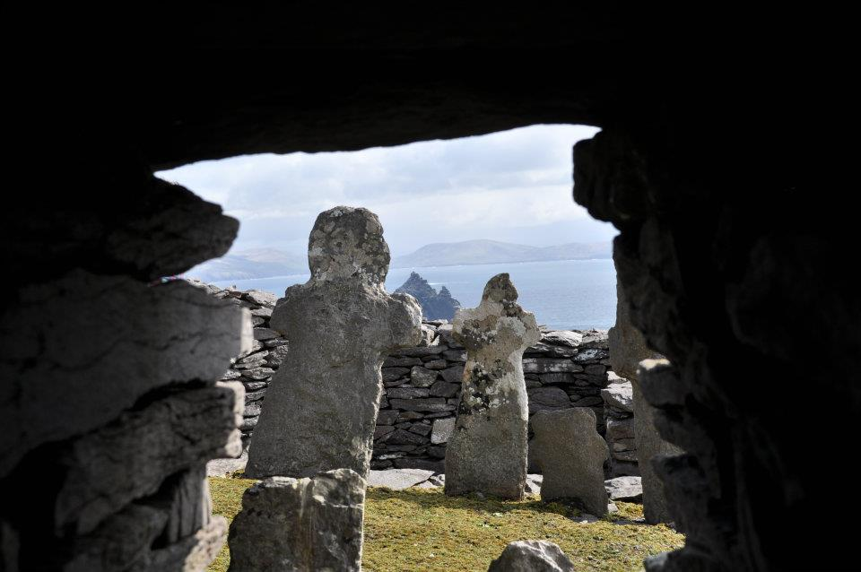
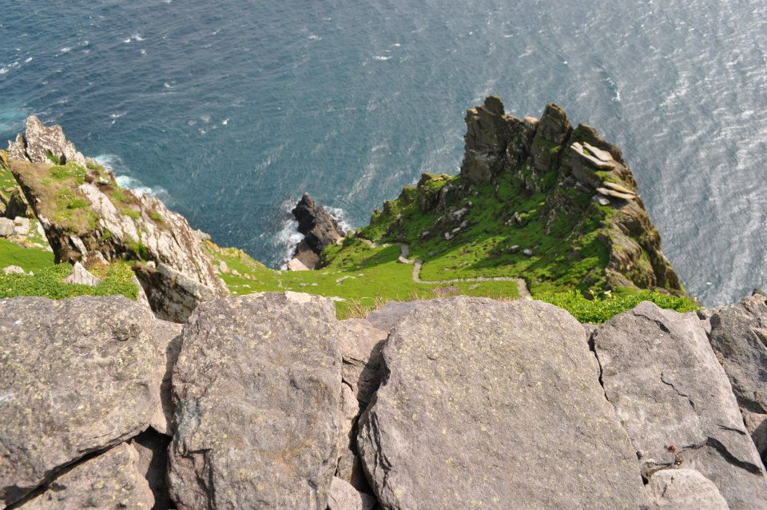
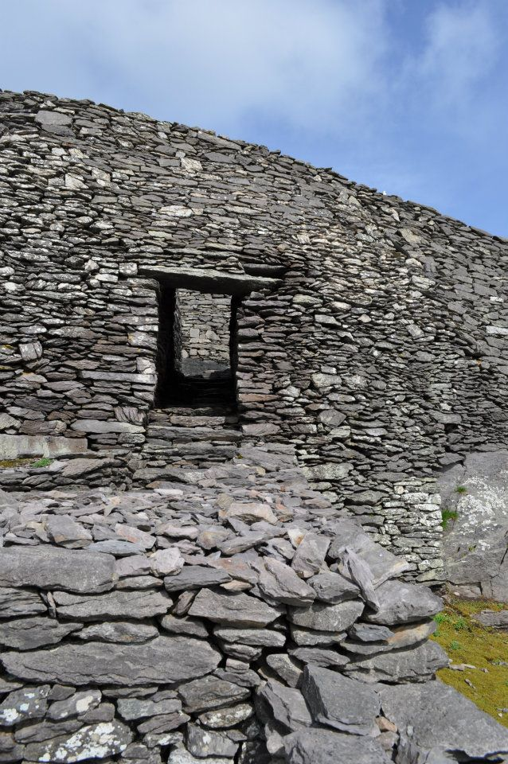

Climbing Skellig Michael
There was a point quite recently when Skellig Michael was place unheard of. I entered an Archaeology field school in Cork Ireland, and part of the course included a history of Ireland. It was here that I first saw the stone bee-hive huts sitting atop a jagged rock in the North Atlantic. Their presence in this clearly dangerous and isolated location was hard to believe. Even though I was already in Ireland, I knew that reaching the tiny island was a likely impossibility. It was a year and half later, on my third trip to Ireland, that I got my chance.

The view from Portmagee.
It is generally believed that the island was first inhabited by monks in the 8th century. They made their way across the tumultuous sea in small boats and founded a monastery where they could remain in total seclusion. As far as seclusion goes, they couldn’t really choose a better place. It was on at least one occasion attacked by vikings, probably assuming anyone living in such hard-to-reach place must have something valuable to hide. I imagine they were disappointed. Skellig Michael was eventually abandoned in the 13th century.
We planned our trip in April of 2012 and tried to book it ahead of time, but we were warned that we might not get to go. It was a long way out to the little town in Kerry. The town of Portmagee is little more than one road big, with a couple of places to stay, a corner shop, and of course a few pubs. We made it all the way out there the night before, hoping our trip wouldn’t be in vain. We had a few pints, dumped one on my brother’s laptop and crashed early, partially for the early rise and partially because we had nothing else left to do in town. Morning came and luckily we got the confirmation. The weather was fair so we hopped into a little boat and began our seven mile journey out to the jagged rock on the horizon.
Little puffins zipped past as swells, larger than the boat, forced the rocky island out of view. If this was the journey in good weather, I could only imagine it in bad. The swells didn’t improve at the islands edge, so we all slowly realized the difficult jump that faced us. The boat pulled as close to a large cement slab and we, one-by-one, jumped when the boat was nearest, before the waves pulled it back away. Person by person, we finally made it on the island and took comfort in the stillness of solid ground.
The climb to the monastery was a beautiful hike up a winding stone stair. The occasional stone wobbled and the hill was incredibly steep, but the location and views made it more captivating than scary. In between the peaks we fought against gusts of wind and made our way up the trail before finally reaching the little cells.
Despite their precipitous location, the monastery felt quite safe and secure, with some stunning views of the Irish coast and other Skellig islands. Being in the original little cells made me wonder about how the monks managed to remain self-sufficient on the island. Surely regular shipments from the mainland were a necessity.
Our time on Skellig Michael was over too fast. We returned to Portmagee and headed off to Galway and the Burren. When planning the trip, I had never considered how dangerous the journey could be. For us it was fine, and the chances of a serious accident were slim. They told us stories about the recent couple of deaths at the island, but thankfully we weren’t part of the unlucky few. It made missteps a bit more fearful, but still it was an amazing experience that I can’t recommend enough.

The view from inside a cell.
I briefly had the chance to revisit the site in film, thanks to Star Wars: The Force Awakens. The island was chosen as Luke’s isolated hideaway. It’s inclusion in the new Star Wars film has made it far more of a tourist attraction, and I hear bookings to visit are the hardest to obtain that they’ve ever been. Still I hope to one day return to the island and the little pub in Portmagee, where I can set eyes on the rumored picture of Mark Hamill pouring a pint of Guinness.

An alternative path up.
--Kenny, 19 January 2017

Back out the way we came.